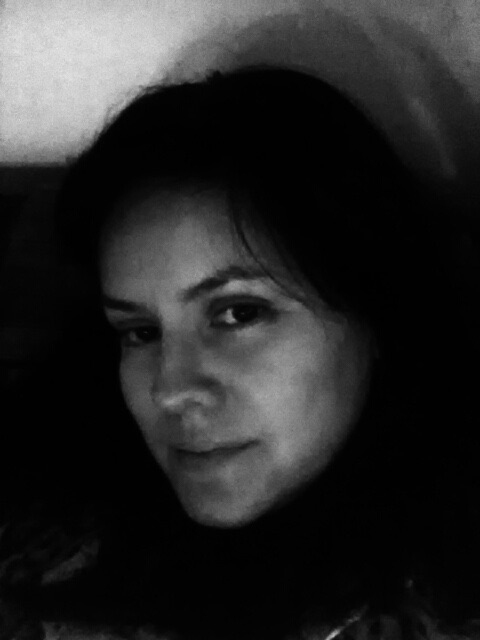

About Me
Hello everybody!! I was born and raised in Mexico.
I studied Chemistry at UNAM which is one of the oldest universities in North America. My bachelor's thesis was focused on the improvement of the quality of the tap water of Mexico City.
Then, I moved to California to purse a doctoral degree and postdoctoral training in Biological Chemistry at UC Davis and UCLA.
I love spending time with my son. We are trying to learn as much as we could about reptiles. My son hopes to become a 'lizard' scientist one day.